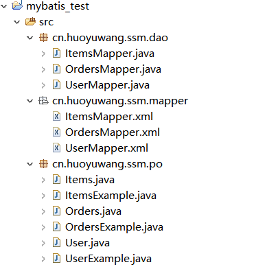

逆向工程字面意思就是反向生成工程, 和 Hibernate一样, MyBatis也有自己的逆向工程工具。详细信息请看官方文档
使用MyBatis逆向工程, 我们就不用再手动创建Model实体类以及对应的Mapper.xml文件和dao类；它可以直接连接数据库的表自动帮我们完成这些操作。是不是很方便？其实也只需要简单的几步就可以了。
首先我们从MyBatis的逆向工程Github仓库下载最新的jar包,还有MyBatis和MySQL的jar包。
获取相关jar包点击百度云，密码：5703
逆向工程的配置
1. 新建项目，导入Jar包
使用IDEA新建一个Java项目，导入我们刚刚下载的三个jar包。
[说明]怎么导入jar包呢？
- 在java项目中新建一个文件夹lib,并将需要导入的jar包复制到lib文件夹中
- 选中jar包，右键点击“Build Path” ==> “Add to Build Path “ 之后该jar包就已经成功添加到了java项目中了。此时你的java项目中多了一个Referenced Libraries 库，该库里面就是成功添加了相关jar包
包解析
- mybatis-generator-core-1.3.5.jar （逆向工程核心包 ）
- mybatis-3.2.3.jar（MyBatis3.x jar包 ）
- mysql-connector-java-5.1.28-bin.jar（MySQL连接jar包）
2. 新建逆向工程的配置文件
在src包下创建逆向工程的配置文件generatorConfig.xml,直接拷贝官方介绍中的XML配置即可.1
2
3
4
5
6
7
8
9
10
11
12
13
14
15
16
17
18
19
20
21
22
23
24
25
26
27
28
29
30
31
32
33
34
35
36
37
38
39
40
41
42
43
44
45
46
47
48
49
50<?xml version="1.0" encoding="UTF-8"?>
<generatorConfiguration>
<context id="testTables" targetRuntime="MyBatis3">
<commentGenerator>
<!-- 是否去除自动生成的注释 true：是 false:否 -->
<property name="suppressAllComments" value="true"/>
</commentGenerator>
<!--数据库连接信息：驱动类、连接地址、用户名、密码 -->
<jdbcConnection driverClass="com.mysql.cj.jdbc.Driver"
connectionURL="jdbc:mysql://localhost:3306/ssm?serverTimezone=UTC"
userId="root" password="root">
</jdbcConnection>
<!-- 默认为false，把JDBC DECIMAL 和 NUMERIC 类型解析为 Integer，
为true时，把JDBC DECIMAL 和 NUMERIC 类型解析为
java.math.BigDecimal -->
<javaTypeResolver>
<property name="forceBigDecimals" value="false"/>
</javaTypeResolver>
<!-- 生成Model类的位置 -->
<javaModelGenerator targetPackage="cn.huoyuwang.ssm.po" targetProject=".\src">
<!-- enableSubPackages:是否让schema作为包的后缀 -->
<property name="enableSubPackages" value="false"/>
<!-- 从数据库返回的值被清理前后的空格 -->
<property name="trimStrings" value="true"/>
</javaModelGenerator>
<!-- 生成mapper映射文件的位置 -->
<sqlMapGenerator targetPackage="cn.huoyuwang.ssm.mapper"
targetProject=".\src">
<!-- enableSubPackages:是否让schema作为包的后缀 -->
<property name="enableSubPackages" value="false"/>
</sqlMapGenerator>
<!-- 生成Dao接口的位置 -->
<javaClientGenerator type="XMLMAPPER"
targetPackage="cn.huoyuwang.ssm.dao"
targetProject=".\src">
<!-- enableSubPackages:是否让schema作为包的后缀 -->
<property name="enableSubPackages" value="false"/>
</javaClientGenerator>
<!-- 指定数据库的表 -->
<table tableName="book"></table>
<!-- 有些表的字段需要指定java类型
<table schema="" tableName="">
<columnOverride column="" javaType="" />
</table> -->
</context>
</generatorConfiguration>
XML内容都加了注释，我们只要修改几个地方就可以了
- 数据库连接信息
- 生成Model、Mapper、Dao 类的位置
- 数据库的表 table
3.执行代码
在src包下新建一个Main.java 文件, 内容也是从官方那里Copy过来的1
2
3
4
5
6
7
8
9
10
11
12
13
14
15
16
17
18
19
20
21
22
23
24
25
26
27
28
29
30
31
32
33import org.mybatis.generator.api.MyBatisGenerator;
import org.mybatis.generator.config.Configuration;
import org.mybatis.generator.config.xml.ConfigurationParser;
import org.mybatis.generator.internal.DefaultShellCallback;
import java.io.File;
import java.util.ArrayList;
import java.util.List;
public class Main {
public void generator() throws Exception{
List<String> warnings = new ArrayList<String>();
boolean overwrite = true;
//指定逆向工程de配置文件
File configFile = new File("src/generatorConfig.xml");
ConfigurationParser cp = new ConfigurationParser(warnings);
Configuration config = cp.parseConfiguration(configFile);
DefaultShellCallback callback = new DefaultShellCallback(overwrite);
MyBatisGenerator myBatisGenerator = new MyBatisGenerator(config,
callback, warnings);
myBatisGenerator.generate(null);
}
public static void main(String[] args) throws Exception{
// write your code here
try {
Main generatorSqlmap = new Main();
generatorSqlmap.generator();
} catch (Exception e) {
e.printStackTrace();
}
}
}
运行程序，刷新程序。就会看到生成的如下源代码:

快速使用
- github clone
- 用你的IDEA打开即可。